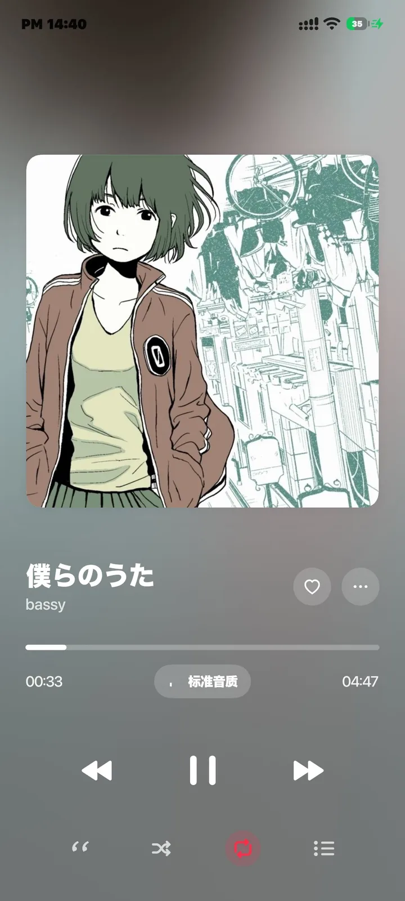
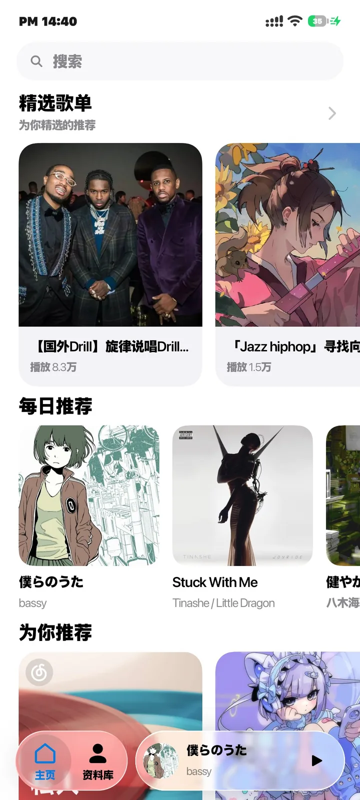
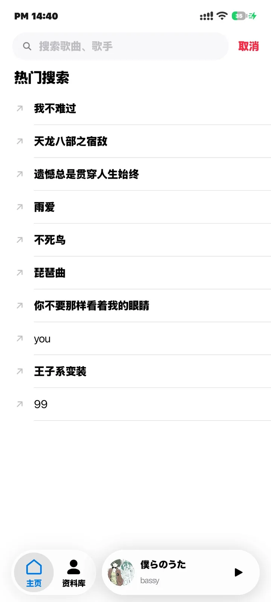
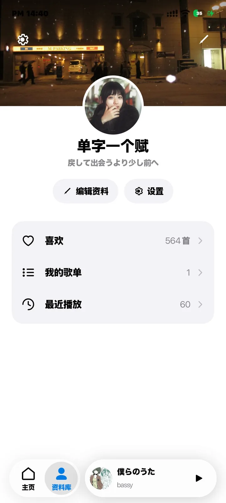

背景场
从封面取色，整块界面跟着一起流动；播放时随音频起伏。
开源 · Android · GPL-3.0
把音乐装进一块会流动的玻璃。
网易云音乐的开源 Android 客户端。
封面取色、逐字歌词、双源搜索，
全在一块玻璃里。

材质 · Liquid Glass
标签栏、播放胶囊和顶栏共用同一份材质：先模糊背后的画面，再把饱和度提起来，最后在胶囊边缘做折射。歌词滚过时，封面的颜色从玻璃后面透上来，字始终清楚。
底栏材质 · 可交互

歌词 · Lyrics
逐字高亮，卡拉 OK 式填充；翻译与音译分行跟随当前行，背景人声单独成行。支持 AMLL TTML 歌词格式。
让每一个字，都踩在拍子上。
搜索与音源 · Sources
网易云与 QQ 音乐同时参与搜索。VIP 或缺失的曲目会自动回退到另一个源，不用手动切来切去。

其余 · Everything Else
从封面取色，整块界面跟着一起流动；播放时随音频起伏。
进度按帧更新，拖动跟手，不跳格。
保存到 Music/云音；在应用内检查并安装新版本。
歌单、专辑、榜单、喜欢的歌、最近播放，都在一处。

自己构建、改界面、提 issue。没有黑盒。